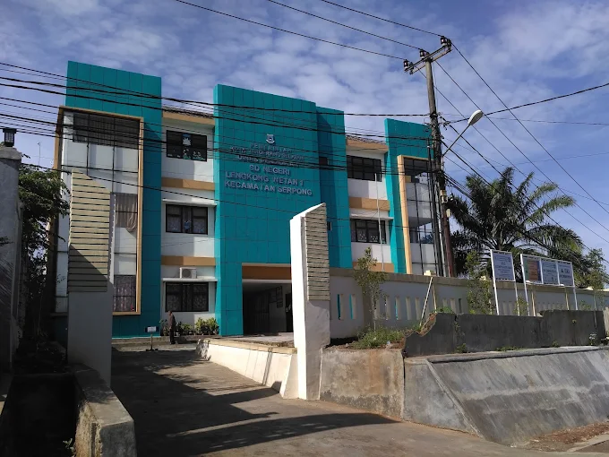

InstitusiSekolah Dasar Negeri
Mendidik • Menginspirasi • Berprestasi
SDN LENGKONG WETAN 1
Membangun generasi berkarakter, cerdas, kreatif, dan siap menghadapi masa depan.
Kepala SekolahTarsono, S.Pd., M.M.
FokusPendidikan Karakter & Prestasi
LayananInformasi Sekolah & PPDB
PROFIL SEKOLAH
Satu halaman untuk mengenal sekolah lebih dekat.

Lingkungan belajar yang aman, nyaman, dan mendorong siswa aktif berkembang.
Tentang Sekolah
Tempat tumbuhnya generasi yang berkarakter dan berdaya saing.
SDN LENGKONG WETAN 1 hadir sebagai satuan pendidikan dasar yang menempatkan pembelajaran bermakna, pembentukan karakter, literasi, kreativitas, dan kolaborasi sebagai bagian penting dari pengalaman belajar siswa.
01Karakter
02Literasi
03Kreativitas
04Kolaborasi
01
Sejarah Sekolah
SDN LENGKONG WETAN 1 berkembang sebagai bagian dari layanan pendidikan dasar bagi masyarakat di wilayah Lengkong Wetan. Sekolah terus berupaya memperkuat mutu pembelajaran, pengembangan kompetensi tenaga pendidik, pemanfaatan teknologi, serta keterlibatan orang tua dan masyarakat dalam mendukung pendidikan anak.
Terwujudnya peserta didik yang berkarakter, berprestasi, kreatif, sehat, dan berwawasan lingkungan.
- Menyelenggarakan pembelajaran yang aktif, aman, dan berpusat pada peserta didik.
- Menumbuhkan karakter positif, disiplin, gotong royong, dan tanggung jawab.
- Mendorong literasi, numerasi, kreativitas, seni, olahraga, dan teknologi.
- Membangun kemitraan yang sehat dengan orang tua dan masyarakat.
02
Tujuan Sekolah
AkademikMenguatkan kemampuan literasi, numerasi, sains, dan berpikir kritis.
KarakterMembiasakan perilaku jujur, disiplin, peduli, dan bertanggung jawab.
TalentaMengembangkan minat dan bakat melalui kegiatan akademik maupun nonakademik.
KemandirianMembentuk siswa yang percaya diri, sehat, adaptif, dan mampu bekerja sama.

SAMBUTAN KEPALA SEKOLAH
Tarsono, S.Pd., M.M.
Kepala Sekolah
“Selamat datang di website resmi SDN LENGKONG WETAN 1. Website ini menjadi ruang informasi bersama untuk mempererat komunikasi sekolah dengan siswa, orang tua, guru, alumni, dan masyarakat.”
Melalui semangat kolaborasi dan pembelajaran yang berkelanjutan, kami berkomitmen menghadirkan lingkungan sekolah yang aman, inklusif, ramah anak, serta mendorong setiap peserta didik untuk tumbuh sesuai potensi terbaiknya.
STRUKTUR ORGANISASI
Organisasi sekolah yang mendukung layanan pendidikan.
Kepala Sekolah
Tarsono, S.Pd., M.M.
Tarsono, S.Pd., M.M.
Koordinator
Bidang Kurikulum
Bidang Kurikulum
Koordinator
Kesiswaan
Kesiswaan
Koordinator
Sarpras
Sarpras
Administrasi / Tata Usaha
GURU & TENAGA KEPENDIDIKAN
Tim yang mendampingi proses belajar siswa.

Nur Aini, S.Pd.
Guru KelasPembelajaran Tematik
Rina Marlina, S.Pd.
Guru KelasLiterasi & Numerasi
Dedi Pratama, S.Pd.
Guru PJOKPendidikan JasmaniSiti Rahma, S.Ag.
Guru Pendidikan AgamaKarakter & Keagamaan
Andi Saputra
Tenaga AdministrasiAdministrasi Sekolah
Fajar Hidayat, S.Kom.
Operator SekolahData & TeknologiDATA SEKOLAH
Informasi pokok satuan pendidikan.
| Nama Sekolah | SDN LENGKONG WETAN 1 |
|---|---|
| Status | Negeri |
| Jenjang | Sekolah Dasar |
| Kepala Sekolah | Tarsono, S.Pd., M.M. |
| NPSN | 12345678 |
| Alamat | Lengkong Wetan, Tangerang Selatan, Banten |
| info@sdnlengkongwetan1.sch.id |
B
AKREDITASI
Akreditasi Sekolah
Nilai / peringkat: B
Nomor sertifikat, lembaga penetap, dan tahun akreditasi dapat diganti berdasarkan dokumen resmi sekolah.
FASILITAS SEKOLAH
Ruang dan layanan yang mendukung pengalaman belajar.
FASILITAS
Koperasi
Layanan penyedia kebutuhan sederhana warga sekolah dan sarana pembelajaran ekonomi.
FASILITAS
Perpustakaan
Ruang literasi untuk membaca, belajar mandiri, riset sederhana, dan kegiatan pembiasaan.
FASILITAS
Mushola
Tempat ibadah dan pembinaan kegiatan keagamaan yang mendukung pembentukan karakter.
FASILITAS
Kantin
Tempat penyedia makanan dan minuman yang mendukung kebutuhan siswa selama di sekolah.
FASILITAS
UKS
Ruang pendukung layanan kesehatan dasar, kebersihan, dan pembiasaan hidup sehat bagi warga sekolah.
Fasilitas yang dicari belum ditemukan.
BERITA SEKOLAH
Kabar terbaru dari lingkungan sekolah.
Semangat Pagi melalui Upacara Bendera
Rangkaian kegiatan pembiasaan yang menanamkan kedisiplinan dan rasa kebersamaan.
Program Literasi untuk Menumbuhkan Budaya Membaca
Pembiasaan membaca menjadi bagian dari rutinitas belajar yang menyenangkan.
Apresiasi untuk Siswa Berprestasi
Dokumentasi penghargaan dan dukungan sekolah bagi siswa yang berkembang di berbagai bidang.
Informasi Awal Penerimaan Peserta Didik Baru
Ringkasan tahapan, dokumen, dan jalur informasi untuk calon peserta didik.
Berita yang sesuai belum ditemukan.
PENGUMUMAN
Informasi penting untuk warga sekolah.
Kegiatan
→Rapat orang tua / wali peserta didik
Informasi waktu, lokasi, dan agenda dapat diperbarui oleh admin sekolah.
Ujian
→Jadwal asesmen dan persiapan siswa
Jadwal lengkap, kisi-kisi, serta kebutuhan administrasi dapat diumumkan melalui halaman ini.
PPDB
→Informasi pendaftaran calon peserta didik
Pantau pembaruan syarat, jalur, jadwal, serta dokumen yang dibutuhkan.
KEGIATAN SEKOLAH
Belajar, bergerak, berkarya, dan bertumbuh bersama.
PRESTASI
Ruang untuk mengapresiasi kerja keras siswa dan sekolah.
01
AKADEMIK
Juara Lomba Cerdas Cermat
Tim SDN LENGKONG WETAN 1
02
OLAHRAGA
Juara Turnamen Futsal
Tim Futsal Siswa
03
SENI
Finalis Festival Seni Pelajar
Perwakilan Siswa
PPDB
Tanya PPDB
Penerimaan Peserta Didik Baru
Persyaratan
- Dokumen identitas peserta didik.
- Dokumen orang tua / wali.
- Dokumen pendukung sesuai jalur pendaftaran.
Jadwal
Pengumuman
Pendaftaran
Verifikasi
Pengumuman Hasil
Alur Pendaftaran
- Siapkan dokumen
- Isi formulir
- Verifikasi berkas
- Tunggu hasil seleksi
Informasi Kontak
Hubungi sekolah untuk memperoleh jadwal dan persyaratan terbaru.
Menuju kontak →KONTAK
Terhubung dengan SDN LENGKONG WETAN 1.
AlamatJl. Lengkong Wetan, Lengkong Wetan, Kec. Serpong, Kota Tangerang Selatan, Banten 15310Alamat sekolah
Telepon(021) 0000 0000
Emailinfo@sdnlengkongwetan1.sch.id
Jam OperasionalSenin–Jumat • 07.00–15.00